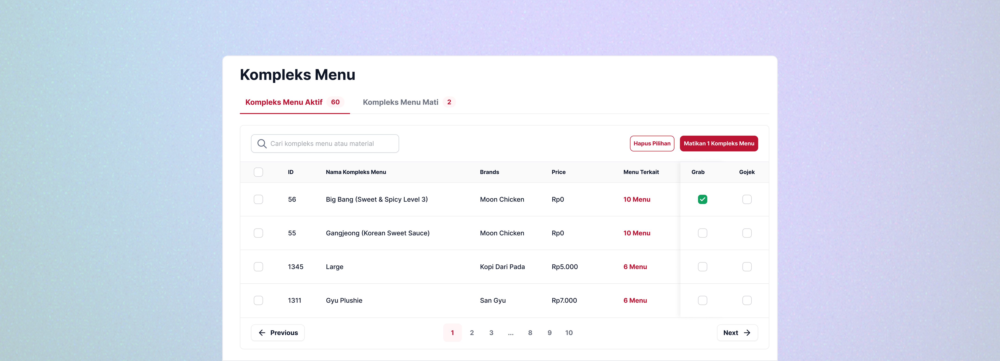
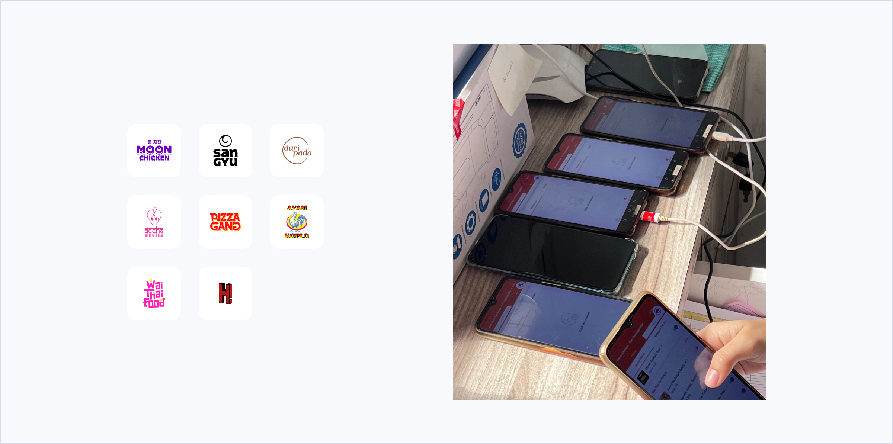
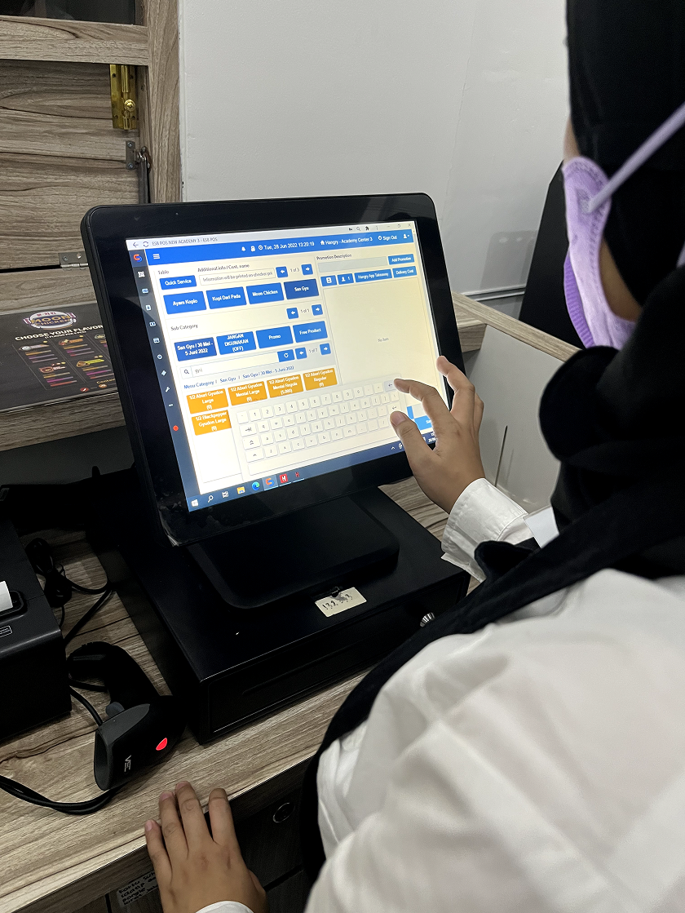
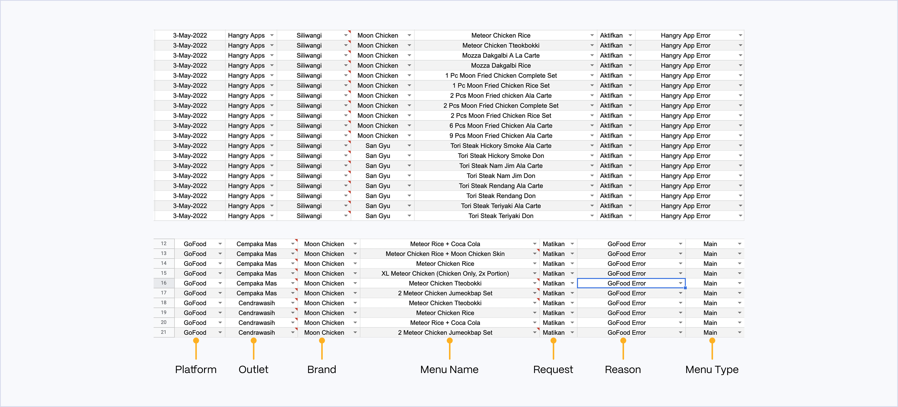
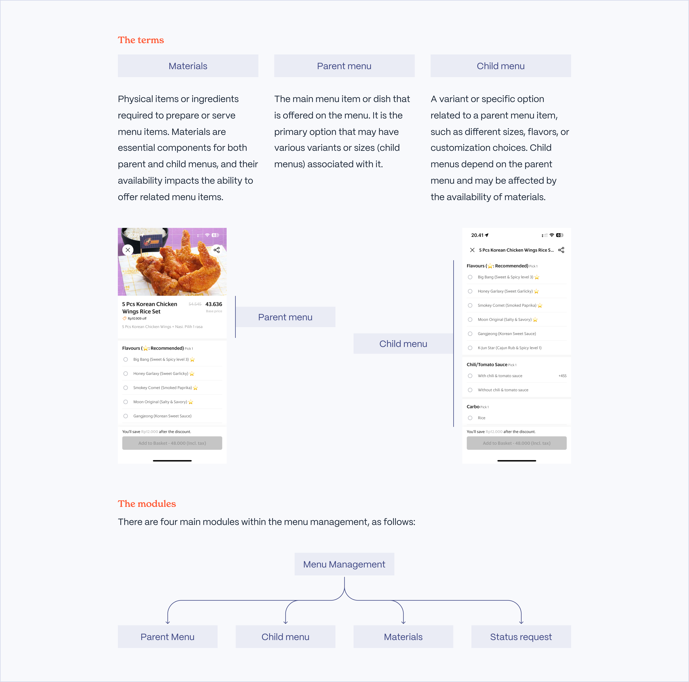
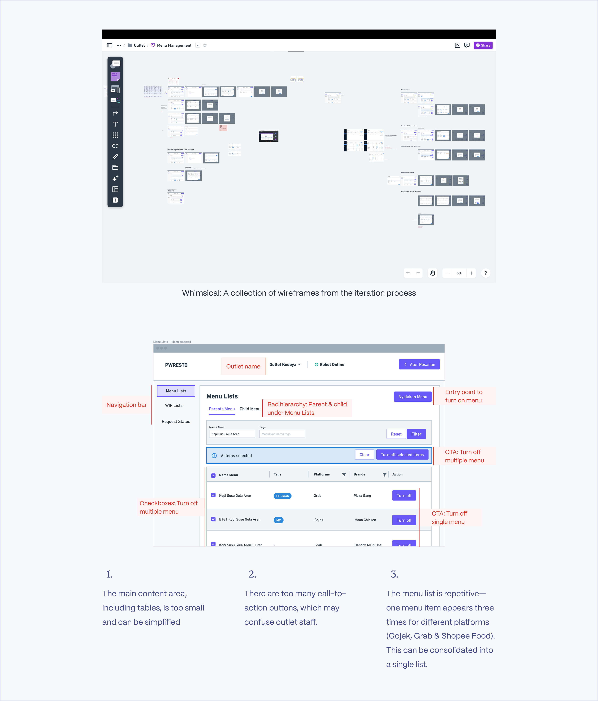
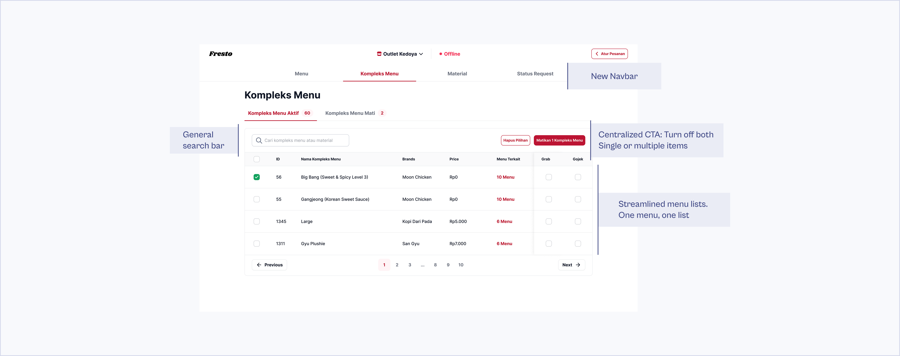

I led the design of the menu management project, one of the key initiatives aimed at helping the company reduce costs. By unifying menu control across 8 brands and 3 platforms into a single interface, the tool increased operational efficiency by 97.78% and saved IDR 64 million in hardware costs.
Every morning before the outlet opens, staff need to update menus based on stock and availability. Hangry has 8 brands, each with approximately 20 menu items, and each brand has its own phone connected to 3 food platforms — GoFood, GrabFood, and ShopeeFood.
With 20 menu items × 3 platforms = 60 items per brand, and 60 × 8 brands = 480 menu items managed by outlet staff every day.

A new phone is required for each new brand at approximately IDR 1,600,000 per outlet. With 5 newly opened outlets and continued expansion across Indonesia, hardware costs were scaling unsustainably alongside business growth.
I visited one of the outlets to observe how staff typically manage menus and orders on-site.

At this point, I want to understand how they usually manage the menu:
Since the requirements given by the PM are still unclear or not detailed enough, I have to gather requirements myself by reaching out to the stakeholders (Ops team). At this stage, I asked them to provide me with any documents they use to manage the menu. After receiving the documents, I discovered that the outlet staff usually turn off multiple menus across multiple brands.

From the image shown above, I found out that the outlet staff can turn off/on multiple menus and brands for one reason. So, another requirement is gathered.
From the file above, we can see that the outlet staff are able to:


Here's the final UI of one of the modules in the menu management system — the Child Menu module. We went through several rounds of testing before reaching this version, including internal testing and a trial at one of the outlets. Only after implementing improvements based on feedback were we able to release it to all Hangry outlets.
